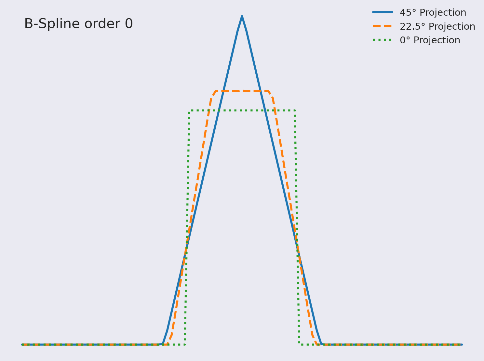

MA Kick-off
Differentiable projection operations for X-ray computed tomography
David Frank
8th February, 2022 Slides are available at: https://ner0-m.github.io/ma-kickoff-presentation/
Tomographic Reconstruction
Object
Measurement
Reconstruction
Attenuation CT

No reconstruction
Phase Contrast CT

No reconstruction
Dark-field CT


- Images of first two rows form: L. Felsner et al., "Phase-Sensitive Region-of-Interest Computed Tomography" (2018), MICCAI 2018
- Images of third row form: P. Modregger et al., "Artifacts in X-Ray Dark-Field Tomography" (2011), AIP Conference Proceedings
Model
\[
f: \Omega \to \mathbb{R}
\]
\[
\Omega \subset \mathbb{R}^n
\]
\[
m_j = \mathcal{M_j}(f)
\]
\[
\mathcal{M_j}: (\Omega \to \mathbb{R}) \to \mathbb{R}
\]
\[
\hat{f} \approx f
\]
\[
\hat{f}(\cdot) = \sum_{i=1}^{I} c_i b(\cdot - x_i)
\]
Images again from:
P. Modregger et al., "Artifacts in X-Ray Dark-Field Tomography" (2011), AIP Conference Proceedings
What do we want from a basis function?
\[
\hat{f}(\cdot) = \sum_{i=1}^{I} c_i b(\cdot - x_i)
\]
Pixel Basis Functions
\[
b(x) =
\begin{cases}
1, & \left\lVert x \right\rVert_{max} < h/2 \\
0, & \text{otherwise}
\end{cases}
\]
B-Spline Basis Functions


\[
\beta^0(x) =
\begin{cases}
1, & \left\lVert x \right\rVert_{max} < h/2 \\
0, & \text{otherwise}
\end{cases},
\quad
\beta^d(x) = \underbrace{\beta^0 \ast \dots \ast \beta^0}_{d+1\text{ terms}}(x)
\]
Literature: F. Momey et. al, "A new representation and projection model for tomography, based on separable B-splines" (2011),
2011 IEEE Nuclear Science Symposium Conference Record
Kaiser-Bessel basis functions

\[
b(r) =
\begin{cases}
\frac{\left(\sqrt{1 - (\frac{r}{a})^2}\right)^m}{I_m(\alpha)}
I_m\left(\alpha \sqrt{1 - (\frac{r}{a})^2}\right), & 0 \leq r \leq a \\
0, & \text{otherwise}
\end{cases}
\]
Literature: R. M. Lewitt, "Alternatives to voxels for image representation in iterative reconstruction algorithms" (1992),
Phys Med Biol
Timeline

Questions?
Thanks for listening!